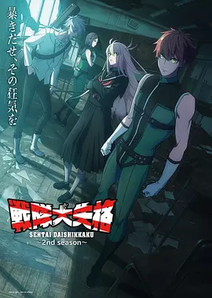

6.1
战队大失格2
Go! Go! Loser Ranger! Season 2
2025
日本
评分 6.1
导演:
佐藤敬一
演员:
小林裕介
类型:
动作,喜剧,奇幻
剧情简介
潜入行动进入第二阶段，城市里的战队巡游依旧闪亮喧闹，但暗处的紧绷气息愈发明显。战斗员 D 在伪装身份下继续潜伏，他每天穿行于训练室、会议厅与形象宣传现场，在耀眼灯光与密集掌声之间保持沉默。他的目光越发敏锐，越能看出那些英雄外表下细微的裂缝：有人在胜利后露出不耐的叹息，有人对任务态度冷漠，还有队员在无人注意时匆匆掩饰紧张。龙神守望者的内部秩序比表面更复杂，权力与职责交叠，成员之间的暗流常常在一句轻描淡写的调侃中显现。D 在狭窄的休息室里听着他们的交谈，捕捉着每一段能指向战队真相的线索；在训练场，他配合着他们的动作节奏，同时默记他们的弱点。他越深入，越能感受到这支象征正义的组织正靠一层层制度与谎言维系着光鲜外壳。城市民众仍旧沉浸在英雄叙事中，每当队员现身，街道便充满欢呼。D 在这些声音里穿行，感受到巨大的反差——人们渴望相信的光辉，与他亲眼见到的现实完全不同。为了完成目标，他必须继续扮演忠诚的队员，即便每一天都在消耗他的耐性与信念。随着战队内部出现新的动荡，D 的任务变得更棘手。他察觉到有高层对现状心生疑虑，而有些队员开始尝试改变规则。一步走错，他的身份就可能暴露；一步走对，十三年来的假面英雄体系便可能出现撼动。他在紧张的昼夜交替中不断逼近关键事实，也逼近一场无法避免的冲突。